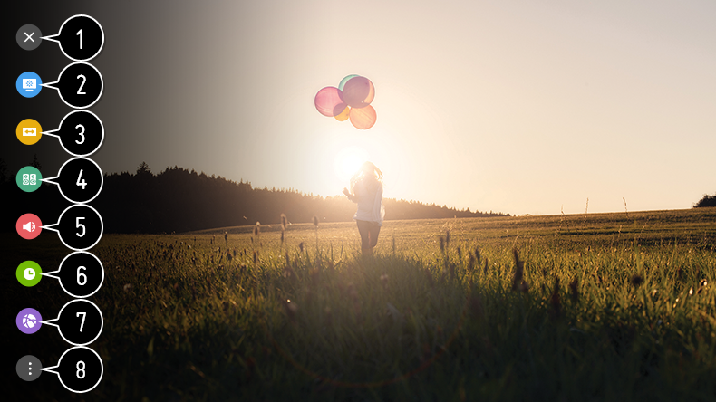

Para utilizar la función de ajustes rápidamente
Muestra un conjunto de controles ligeros que permiten ajustar con rapidez y facilidad funciones como Modo de imagen, Relación de aspecto, Salida de sonido, etc.
Pulse el botón  del mando a distancia.
del mando a distancia.
del mando a distancia.

- Cierra los ajustes rápidos.
- Permite establecer Modo de imagen.
- Permite establecer Relación de aspecto.
- Permite establecer Modo de sonido.
- Permite elegir Salida de sonido.
- Permite establecer Temporizador de apagado.
- Vaya a la pantalla Conexión.
- Permite establecer más opciones.
Mantenga pulsado en el mando a distancia durante la configuración para desplazarse hasta el menú correspondiente.